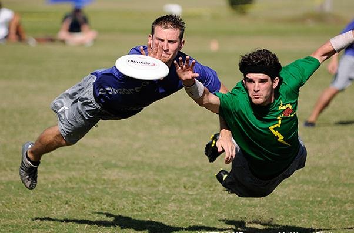
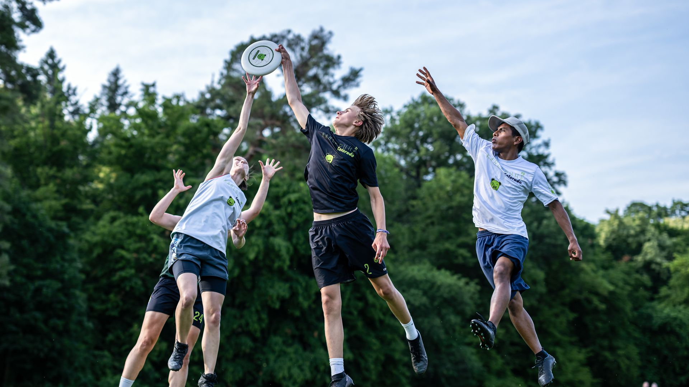
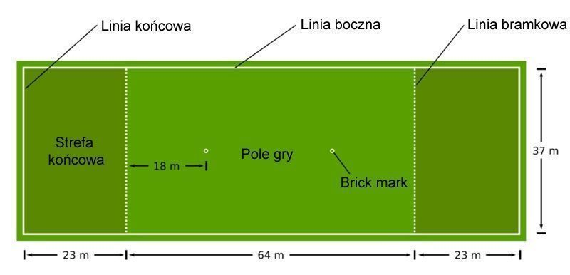
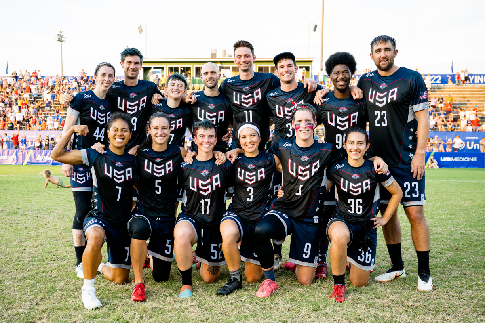
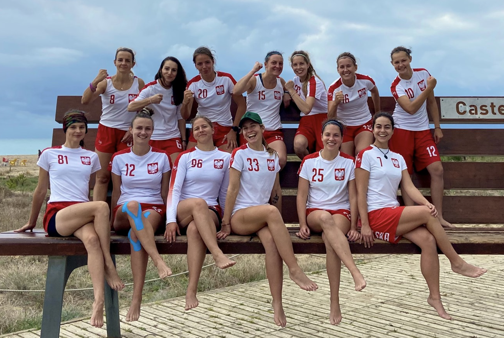

O ultimate
Czym jest Ultimate Frisbee?
Ultimate to bezkontaktowy, dynamiczny sport drużynowy, w którym rywalizują ze sobą dwa siedmioosobowe zespoły. Celem gry jest podawanie sobie dysku przez drużynę atakującą, by w końcu złapać go w zonie przeciwnika i tym samym zdobyć punkt. Oczywiście w tym samym czasie drużyna przeciwna stara się w tym aktywnie przeszkadzać. Ultimate łączy w sobie bieganie, rzucanie, łapanie i skakanie. Przydają się zwinność i dynamiczność. Chociaż i tak najważniejsza jest umiejętność grania zespołowego. Najłatwiej nauczyć się grać kupując dysk i wychodząc na boisko czy łąkę ze znajomymi.
 
Boisko do Ultimate
W grę ultimate gra się na prostokątnym boisku, którego szerokość to 37 metrów a długość 110 metrów, przy czym 23 metry skrajne po obydwu stronach nazywają się strefą końcową (punktową).

Historia sportu
Sport narodził się w głowach licealistów z Columbia High School w Maplewood w stanie New Jersey w 1968 roku. Garstka uczniów piszących do gazetki szkolnej wzięła sobie za zadanie wymyślenie nowej gry do wspólnego spędzania wieczorów. Na samym początku zasady były dość płynne, raczej przypominające futbol grany przy użyciu dysku Frisbee, ale z czasem uległy one modyfikacji i Ultimate nabrało unikalnego charakteru. Już w bardziej sprecyzowanej postaci przeniosło się wraz z kończącymi szkołę licealistami na uniwersytety.
Kto gra w Ultimate?
Dzisiaj Ultimate znane jest na każdym kontynencie. W Stanach liczbę graczy szacuje się na 8 milionów, w Polsce ta ilość jest o wiele mniejsza, zaledwie około kilku tysięcy zaangażowanych osób. W Ultimate może grać nieomalże każdy, od pięciolatka do pięćdziesięciolatka. W Polsce istnieje około 50 drużyn, a kolejne wyrastają jak grzyby po deszczu. Gramy w trzech dywizjach: koedukacyjnej (mixed), męskiej (open) i damskiej (women). Na pewno w każdym zespole znajdzie się parę osób, które z chęcią przekażą swoją wiedzę nowym zawodnikom. Do tego w całym kraju regularnie odbywają się turnieje i kolejki lig, na których można zobaczyć sport w akcji.
 
Ultimate w 10 krokach
- Boisko. Oficjalnie boisko powinno mieć wymiary 100 metrów na 37 metrów. Zony końcowe mają po 18 metrów długości. Oczywiście do nauki można grać na mniejszym boisku, zachowując jego proporcje.
- Rozpoczęcie gry. W każdej drużynie jest po siedmiu zawodników, ale przy mniejszym boisku lepiej zmniejszyć też liczbę graczy. Drużyny ustawiają się z przodu swojej zony punktowej na początku każdego punktu. Drużyna, która ma dysk, będzie pullować (rzucać dysk jak najdalej) w kierunku drugiej drużyny. Pull rozpoczyna grę.
- Rozgrywka. Drużyna atakująca może podawać dysk w każdym kierunku. Zawodnik, który złapie dysk, musi jak najszybciej się zatrzymać. Tylko jeden obrońca może bronić osoby z dyskiem – pozostali obrońcy muszą być przynajmniej 3 metry od niej.
- Osoba z dyskiem. Osoba z dyskiem ma 10 sekund by podać go dalej. Obrońca, który ją kryje, liczy do dziesięciu.
- Strata posiadania następuje, gdy dysk nie zostanie złapany, uderzy w ziemię, wypadnie na aut, zostanie przechwycony lub zbity w locie. Obrona staje się w tych sytuacjach atakiem i może od razu podnieść dysk i rozpocząć atak.
- Zdobywanie punktu. By go zdobyć trzeba tak podać dysk, by osoba z drużyny atakującej złapała go w zonie punktowej przeciwnika.
- Faule. Kontakt jest niedozwolony i skutkuje faulem. Zasłony czy zabiegnięcia drogi są również niedozwolone, ponieważ powodują niebezpieczne sytuacje.
- Rozwiązywanie sytuacji spornych. Kiedy jeden z graczy uzna, że przeciwnik go sfaulował, powinien natychmiast głośno powiedzieć „faul”. Gra zatrzymuje się, a zawodnicy uczestniczący w spornej sytuacji próbują razem ustalić, co zaszło. Jeśli zawodnik faulujący zgadza się, co do swojej winy, dysk wraca w posiadanie osoby, która miałaby go, gdyby faul nie nastąpił. Jeśli natomiast nie zgadza się, dysk wraca o jedno podanie w tył.
- W tym sporcie nie ma sędziów! Panuje zasada osobistej odpowiedzialności. Zawodnicy każdy spór na boisku powinni rozwiązywać sami w sposób obiektywny, wedle zasad Spirit Of The Game.
- Spirit of the game = Duch gry. Podstawą Ultimate jest duch sportu i gra fair. Z założenia rywalizacja sportowa nigdy nie powinna odbijać się na wzajemnym szacunku, poszanowaniu zasad oraz przyjemności z gry.
Ultimate Frisbee w Europie
Sport z roku na rok staje się coraz popularniejszy w Europie, czemu sprzyjają duże turnieje organizowane w różnych Krajach. Najważniejszym eventem zwieńczającym każdy sezon są Klubowe Mistrzostwa Europy (taka Liga Mistrzów piłki nożnej) odbywające się każdego roku na przełomie września/października. Poziom w zależności od kraju jest mocno zróżnicowany, na przestrzeni ostatnich 10 lat w tym sporcie zdecydowanie dominuje Londyńska drużyna "Clapham", gdzie zawodnicy trenują ten sport od najmłodszych lat. Poniższa tabela przedstawia lokalizacje rozgrywek oraz Mistrzów Kontynentu w poszczególnych latach.
| Lokalizacja rozgrywek | Rok | Zwycięska drużyna |
|---|---|---|
| Brugia, Belgia | 2011 | Flying Angels Bern |
| 2021 | Clapham Ultimate | |
| Frankfurt, Niemcy | 2012 | Clapham Ultimate |
| 2014 | Clapham Ultimate | |
| 2016 | Clapham Ultimate | |
| Bordeaux, Francja | 2013 | Clapham Ultimate |
| Wrocław, Polska | 2015 | Clapham Ultimate |
| 2018 | Clapham Ultimate | |
| 2023 | Clapham Ultimate | |
| Caorle, Włochy | 2017 | Clapham Ultimate |
| 2019 | CUSB La Fotta | |
| 2022 | Ranelagh |